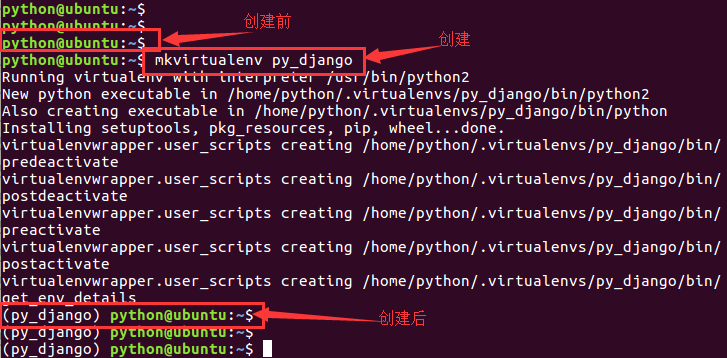
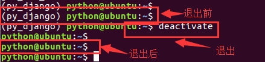
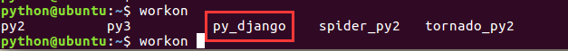
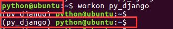
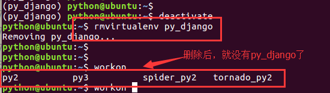
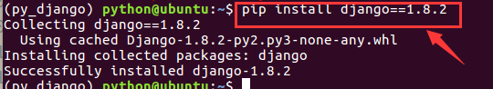

虚拟环境
在开发过程中，当需要使用python的包时可以联网安装
sudo pip3 install 包名称
使用如上命令，会将包安装到/usr/local/lib/python3.5/dist-packages下。
产生的问题
如果在一台机器上，想开发多个不同的项目，需要用到同一个包的不同版本，如果还使用上面的命令，在同一个目录下安装或者更新，其它的项目必须就无法运行了，怎么办呢？
解决方案：虚拟环境。
那么什么是虚拟环境呢？
这里给大家举一个简单的例子，桌面上有一个word文件，我们打开修改这个文件，修改了一会之后发现还是原来的文件比较好，这个时候我想找回原来的文件就比较困难了。那么怎么办呢？就有这样一种解决方案，在修改文件之前，先复制一份，然后在副本文件里进行修改，这样即使发现修改有错，也不会影响原始文件。
虚拟环境其实就是对真实pyhton环境的复制，这样我们在复制的python环境中安装包就不会影响到真实的python环境。通过建立多个虚拟环境，在不同的虚拟环境中开发项目就实现了项目之间的隔离。
创建
首先安装虚拟环境，命令如下:
sudo pip3 install virtualenv #安装虚拟环境
接下来还要安装虚拟环境扩展包，命令如下：
sudo pip3 install virtualenvwrapper
安装虚拟环境包装器的目的是使用更加简单的命令来管理虚拟环境。
修改用户家目录下的配置文件.bashrc,添加如下内容：
export WORKON_HOME=$HOME/.virtualenvs
source /usr/local/bin/virtualenvwrapper.sh
使用source .bashrc命令使配置文件生效。
创建python3虚拟环境的命令如下：
mkvirtualenv -p python3 虚拟环境名称
例：
mkvirtualenv -p python3 py_django

小总结
- 创建成功后，会自动工作在这个虚拟环境上。
- 创建虚拟环境需要联网。
- 工作在虚拟环境上，提示符最前面会出现"(虚拟环境名称)"。
- 所有的虚拟环境，都位于/home/python/下的隐藏目录.virtualenvs下。
退出
退出虚拟环境的命令如下：
deactivate

查看与使用
查看所有虚拟环境的命令如下：
提示：workon后面有个空格，再按两次tab键。
workon 两次tab键

使用虚拟环境的命令如下：
写出名称的前部分后，可以使用tab键补齐
workon 虚拟环境名称
例：
workon py_django

提示：注意提示符的变化
删除
删除虚拟环境的命令如下：
rmvirtualenv 虚拟环境名称
例：
先退出：deactivate
再删除：rmvirtualenv py_django

包操作
在虚拟环境中可以使用pip命令操作python包，安装命令如下：
pip install 包名称
注意：在虚拟环境中不可使用sudo pip install 包名称 来安装python包，这样安装的包实际是安装在了真实的主机环境上。
查看已安装的python包命令如下：
pip list
pip freeze
这两个命令都可已查看当前工作的虚拟环境中安装了哪些python包，只是显示的格式稍有不同。
安装django包
后面要学习使用django，我们使用的是django1.8.2的版本，这是一个稳定性高、使用广、文档多的版本，注意，如果前面删除过虚拟环境py_django，则需要先创建一下，否则直接安装django包即可。
mkvirtualenv py_django
然后安装django1.8.2的包，命令如下：
pip install django==1.8.2

看到上面这个内容，说明django环境就安装成功了。